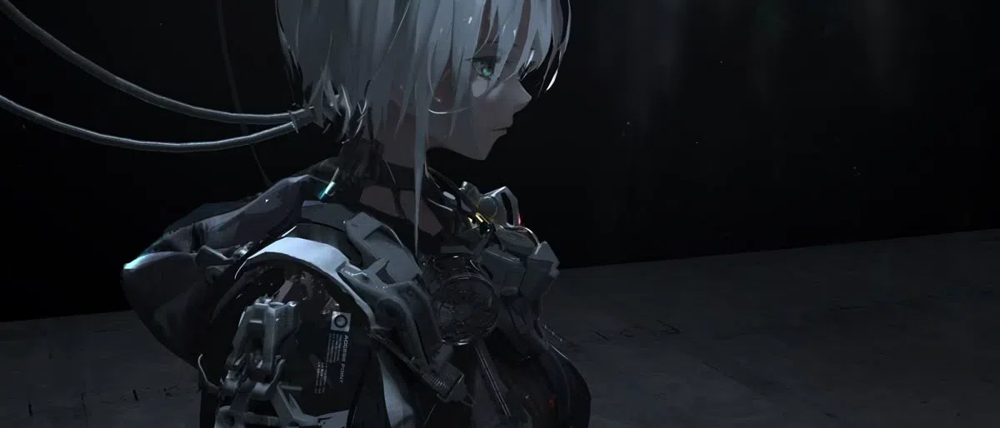

im back to that familiar feeling of "Coming", or rather it is an Intimation. is this truly the remnants of psychosis as i once speculated? or am i stuck in a cycle, blinded by self-improvement & whatever is nearing completion... am i just chasing that feeling of completion, pushing it further away? i dont know. my brain fog has cleared and my thoughts are getting more coherent day by day, as i have earned my peace irl. was it truly just the chaos of life causing all these problems for me? that too, i do not know. i have been left with many unknowns, again. as if i subconsciously am beckoning aspects of my old self to come forth... that curious, knowledge lustful, ever creative version of me before my life went on pause for 11 years... all of my knowledge, intellect, computer skills, programming knowledge comes from those days when i was 13 & 14. from making ddos skripts in batch to take down the schools networks to breaching the databases of their network with sqli.. and making random websites then with wix and webs to slowly learning raw PHP.... i like to think i was gifted and ahead of my time. sadly i still feel 14 mentally, and im trying to force change both in knowledge and personality. its gotten easier to write blog posts at least! i miss the vastness i once held within me, now i am haunted by deeply carved shadows of trauma, not controlling, just there, weighing me down. the shadows are getting lighter and move with me instead of against me now. i wonder what that will bring for myself. sadly i was robbed of my entire teenage years and i tried to live them in my twenties but people didnt like that and tried to bring me down as they saw it as a weakness? barbarism in 2025.. haha. im only in my mid twenties but i feel old despite most of my life being a blur. i hope my late twenties and early thirties are good! that would be a nice change. maybe im just picking up all the fragments and putting everything back together.
